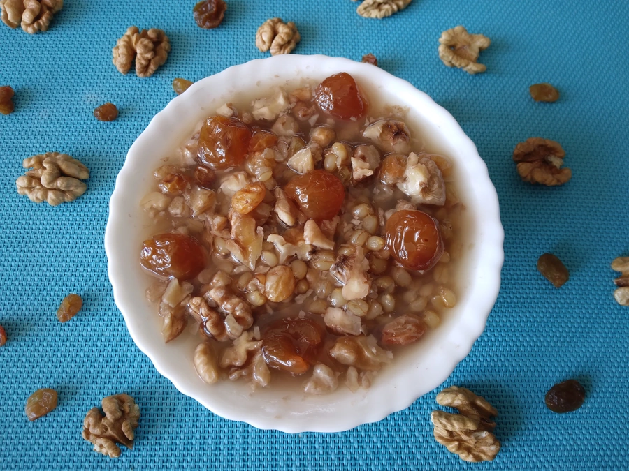

Tsandili

Description
Tsandili which is called also Kolio or Korkoti is a healthy and tasty dish. This ritual dish comes from Eastern
Georgia and is prepared for funerals or to commemorate deceased.
Ingredients
- 500 g Wheat
- 200 g Raisins, soaked
- 200 g Walnuts, cut
- 200 g Honey
- White cherry jam
Steps
- Wash wheat carefully, cover with water and soak for 4-6 hours or overnight. Drain well, put it into the
saucepan and pour enough water to cover the wheat. Cook the wheat until softened, about 1 hour.
- Add walnuts, raisins and honey or sugar to the cooked wheat. You can also add vanilla and some dried fruit,
such as apricots, prunes, dates etc. Serve cold.